Control path points tangents manually
It is now possible to manually set the tangents of a specific point on a path. This allows to override the automatic behavior to create new shapes.
Substance 3D Painter 9.1 adds tangent control for the Path tool, support of the SVG file format, the ability to import and apply resources by drag and drop and support for translucency in the viewport.
Release date: 7 November 2023
In this new version we continue the development of the Path tool (introduced in version 9.0) to add missing bits and features requested by the community.
Control path points tangents manually
It is now possible to manually set the tangents of a specific point on a path. This allows to override the automatic behavior to create new shapes.

Edit path points via manipulators
Sometimes, just slidings points on the surface of the object is not enough. The manipulators allow to move points beyond the surface. This can be very helptful to move several points at once for example in case they were too far from a surface after a mesh re-import.
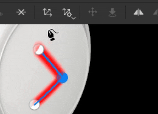
Toggle paths visibility individually
Paths visibility can now be changed per path via the dedicated viewport panel. Disabling a path will remove its contributions from final textures without having to delete it.
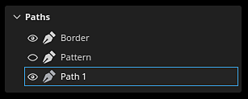
Copy and paste path positions and properties
Copy and pasting paths has been extended to be able to only copy a path point positions or its properties. Syncing paths in different ways is now possible, making it easier to create complex effects (via the positions) or to share a specific look across different locations (via the properties).

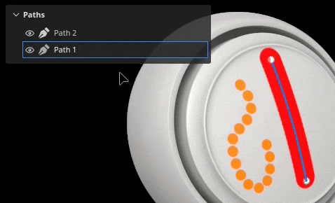
For more information about the Path tool, see the dedicated documentation.
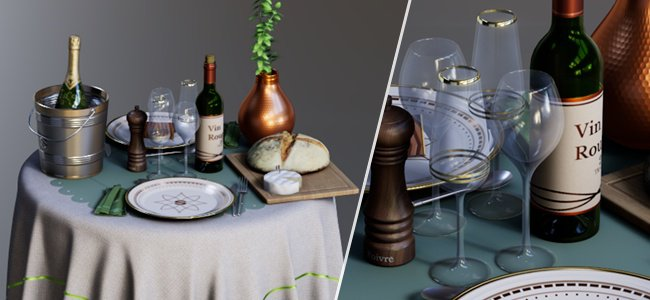
The Adobe Standard Material (ASM) shader, which is the default when creating a new project, has been updated to support Translucency, Transparency and Absorption properties. This means it is now possible to view the result of those rendering behaviors in the real-time viewport (as well as inside Iray renderer).
So authoring materials like glass, foliage or plastics with a thin absorption of light is now possible and directly viewable in the viewport. Exporting to other Substance 3D applications will also result into matching look thanks to the ASM definition.
New ASM shader settings
The ASM shader has been updated to support new functionalities, which can be modified via the Shader settings window:
Improved shader settings UI and tooltips
With the rework of the shader we took the opportunity to improve the UI of the parameters, as well as adding many new tooltips to more easily discorver how to activate them.
The order of parameters should also match better other Substance 3D software, making it easier to do back and forth when trying out settings.
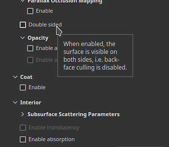
New sample project to demo the Adobe Standard Material
Manipulating the new ASM properties can be difficult at first, so a new sample project demonstrating several features of the shader has been added to make it easier to learn them.
This project is called French Restaurant Table and can be found via the File > Open sample menu. It also uses a lot of little tricks, so it can be a great learning resource to discover new ways of texturing.
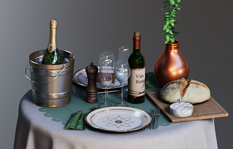
Translucency channel now defaults to a black color
In order to make the new shader properties easier to use and avoid unexpected results in the viewport, the default color of the channel Translucency has been changed to black (instead of white).
If this channel was already in use in your project, you can get the previous behavior by simply adding a fill layer at the bottom of your layer stack and setting the channel value to white. You might want to enable the setting Use translucency as scattering mask in the shader parameter as well to re-apply the contribution of the channel to the sub-surface scattering result.
This release adds the support of SVG files as resources that can be used in layers, paint tools, etc.
SVG file are quite handy to represent logos or shapes precisely while being very lightweight. In Painter they can be rendered at a desired resolution and easily updated, making them perfect for the non destructive workflow.
Import SVG files
SVG files can be imported like any other resources, in projects, in libraries, etc. SVG up to version 1.1 can be imported, features from newer versions are unsupported.
Import has also been made easier in this version as well (see below) so that using SVG files can be done by simply drag and dropping resources from outside Painter directly onto the mesh or the layer stack.
Dedicated SVG settings
When using an SVG resource, a few settings are available to control its look:
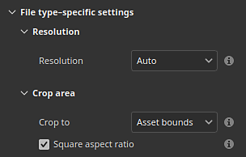
New SVG tailored materials
3 new resources have been added to help the use of SVG files when texturing:
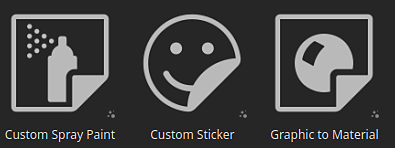
For more information about the SVG format and settings, see the dedicated documentation.
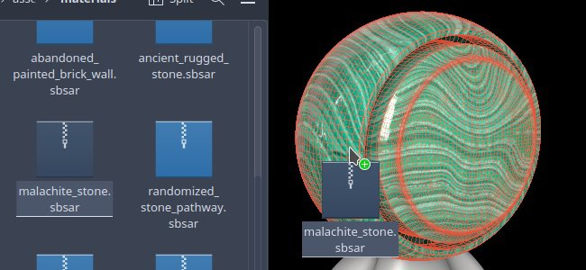
This release make it possible to drag and drop an external file into different contexts of the application to automatically import a resource and use it. This new process allows to skip tedious steps related to importing files.
Import via drag and drop into the viewport
Drag an external file into the viewport to be able to put it directly on the mesh. This action will automatically create a new layer. Depending on the nature of the resource (image, Substance material, Substance filter, etc.) the result will adapt accordingly.
Import via drag and drop into the layer stack
The same way it is possible to drop external resource files into the viewport, dropping files into the layer stack allow to directly create layers or effects with the resource in it.
Import via drag and drop into a resource slot
Importing a resource directly into a layer or a tool is also possible. If a fill layer or effect with the right setup already exists, simply drop an external file into one of the channel slot of the Properties window to import and apply it.
For more information on importing resources, see the dedicated documentation.
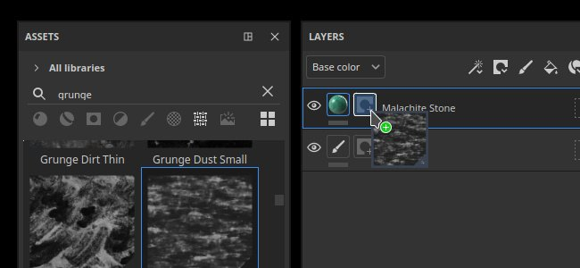
Drag and drop improvements are not limited to importing resources. Drag and dropping a resource from the Assets window can now be used to create new layers, effects and even masks on the fly.
Drag and drop many types of resources
It is now possible to drag and drop types of resources directly into the viewport or the layer stack. The following type of resources can now be drag and dropped (almost) anywhere:
Drop resources as new layer or effect
By choosing where a resource is dropped, Painter will automatically create a new layer or a new effect:
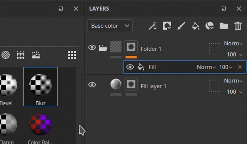
Choose between Content or Mask effect stack while dragging
When dragging a resource over a thumbnail Painter will automatically switch to the associated effect stacks. After that it becomes very easy to just drop the resource in a precise location inside that stack. This avoid the need to switch to the right stack beforehand.
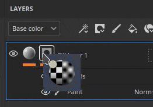
Create a new black mask on the fly
A new icon appears on any layer without a mask while dragging a resource. When a resource is dropped on this ghost mask it will automatically create a new mask and add the new resource. It is a quick way to setup a new mask and avoid to cancel the drag and drop to add it manually.
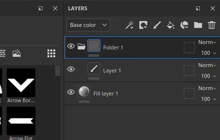
Drop in the viewport to create new layers
Drag and dropping resources can also be done in the viewport to create new layers. Depending on the type of the resource, the result may change. A filter will create a paint layer in passthrough mode, while a smart mask will create a fill layer with a new mask.
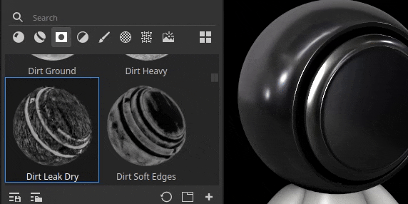
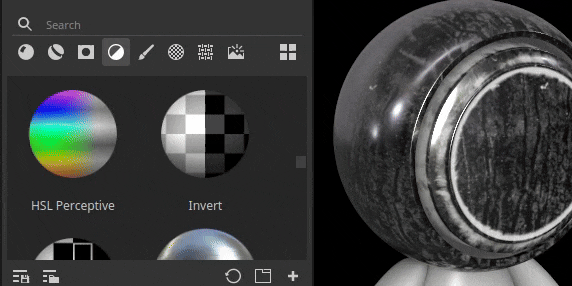
Use keyboard modifiers for advanced behaviors
When dropping a resource, maintaining the keyboard modifier CTRL or ALT can enable additional behaviors:
Several minor features and improvements have also been added in this release.
Lossless compression of 16bit images
From now on, any images contained in a project with a bit depth of 16 will be compressed with a lossless algorithm, allowing to reduce their size without losing quality. This is in addition of the project file already compressing its own data.
This change principally target bake textures which are usually the reason why project files can be very heavy on the disk. In average we saw projects being reduced by 30% to 50% in size on disk.
This compression is applied automatically when saving any project (old or new) on resources not already compressed. It means that for old projects, saving for the first time in this new version could take a bit more time than usual. Saving time should be back to normal once this is done.
New UV set to UV set fill projection mode
A new projection mode for fill layers/effects has been added named UV set to UV set projection. It can be used to project a texture based on different UVs available on the mesh inside the project. It can be used to perform more advanced texture transfert without the need to rely on external tools.
UV set 0 is the default UV used for painting by Painter. If additional UV sets are available, they will be available inside the dropdown from the setting Source:
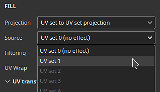
Temporal Anti-Aliasing is enabled by default on any new project
When creating a new project, the Temporal Anti-Aliasing setting available in the Display Settings window is now enabled by default in order to improve the quality of the rendering in the viewport.
New Python API improvements
The Python API recived a few additions in this release:
New send to After Effects (beta)
A new send to action is available to export a mesh and its texture to After Effects, making it convenient to iterate on visual effects. This feature requires the access to After Effects version 24.1 beta minimum.
(Released: November 07, 2023)
Summary: Major release introducing SVG and transparency support, as well as drag and drop and path tool improvements
Added:
Fixed:
Known issues: